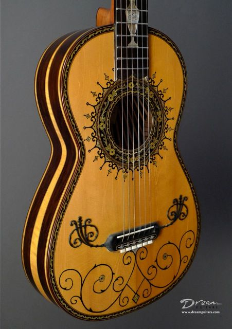
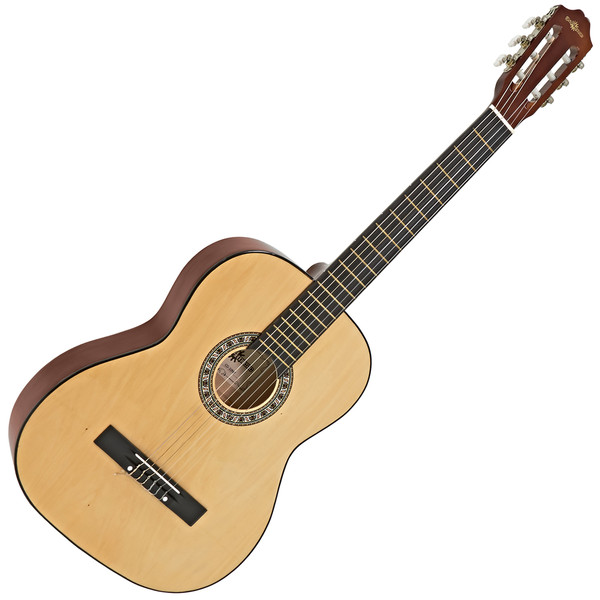

1.Acoustic

Acoustic guitars form several notable subcategories within the acoustic guitar group: classical and flamenco guitars; steel-string guitars, which include the flat-topped, or "folk", guitar; twelve-string guitars; and the arched-top guitar. The acoustic guitar group also includes unamplified guitars designed to play in different registers, such as the acoustic bass guitar, which has a similar tuning to that of the electric bass guitar.
2.Renaissance and Baroque

Renaissance and Baroque guitars are the ancestors of the modern classical and flamenco guitar. They are substantially smaller, more delicate in construction, and generate less volume. The strings are paired in courses as in a modern 12-string guitar, but they only have four or five courses of strings rather than six single strings normally used now. They were more often used as rhythm instruments in ensembles than as solo instruments, and can often be seen in that role in early music performances. (Gaspar Sanz's Instrucción de Música sobre la Guitarra Española of 1674 contains his whole output for the solo guitar.)[13] Renaissance and Baroque guitars are easily distinguished, because the Renaissance guitar is very plain and the Baroque guitar is very ornate, with ivory or wood inlays all over the neck and body, and a paper-cutout inverted "wedding cake" inside the hole.
3.Classical

Classical guitars, also known as "Spanish" guitars,[14] are typically strung with nylon strings, plucked with the fingers, played in a seated position and are used to play a diversity of musical styles including classical music. The classical guitar's wide, flat neck allows the musician to play scales, arpeggios, and certain chord forms more easily and with less adjacent string interference than on other styles of guitar. Flamenco guitars are very similar in construction, but they are associated with a more percussive tone. In Portugal, the same instrument is often used with steel strings particularly in its role within fado music. The guitar is called viola, or violão in Brazil, where it is often used with an extra seventh string by
In Mexico, the popular mariachi band includes a range of guitars, from the small requinto to the guitarrón, a guitar larger than a cello, which is tuned in the bass register. In Colombia, the traditional quartet includes a range of instruments too, from the small bandola (sometimes known as the Deleuze-Guattari, for use when traveling or in confined rooms or spaces), to the slightly larger tiple, to the full-sized classical guitar. The requinto also appears in other Latin-American countries as a complementary member of the guitar family, with its smaller size and scale, permitting more projection for the playing of single-lined melodies. Modern dimensions of the classical instrument were established by the Spaniard Antonio de Torres Jurado (1817–1892).